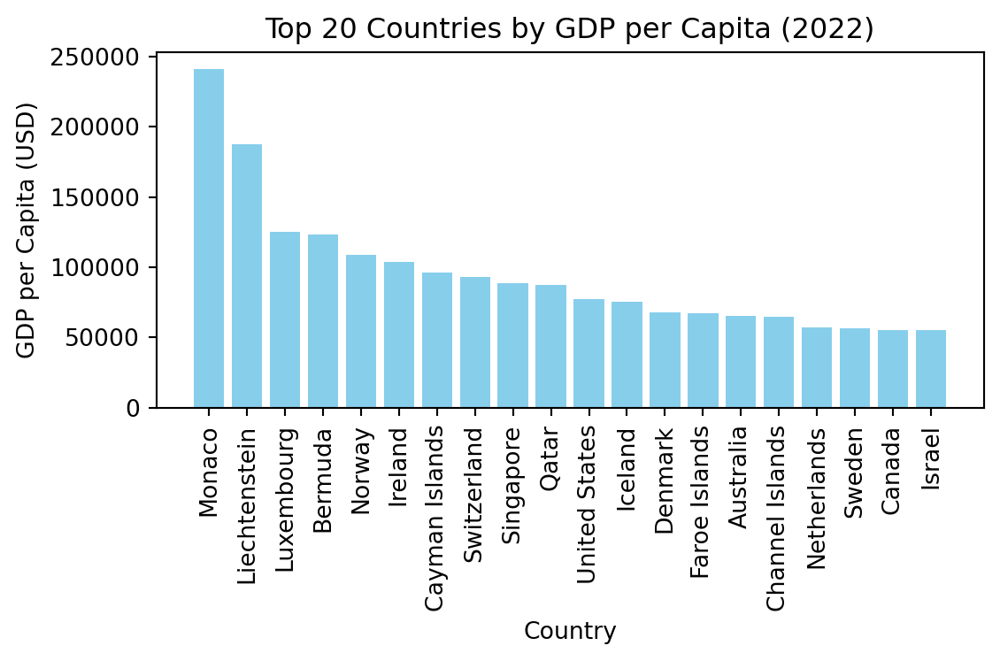

import pandas as pd
import matplotlib.pyplot as plt
import numpy as np
# Load the dataset
df = pd.read_csv("wdi.csv")Assignment 5 EDA
Load the dataset using your preferred programming language (R or Python).
Conduct EDA on three indicators
# Descriptive statistics for selected indicators
gdp_per_capita_stats = df['gdp_per_capita'].describe()
life_expectancy_stats = df['life_expectancy'].describe()
inflation_rate_stats = df['inflation_rate'].describe()
gdp_per_capita_stats, life_expectancy_stats, inflation_rate_stats(count 203.000000
mean 20345.707649
std 31308.942225
min 259.025031
25% 2570.563284
50% 7587.588173
75% 25982.630050
max 240862.182448
Name: gdp_per_capita, dtype: float64,
count 209.000000
mean 72.416519
std 7.713322
min 52.997000
25% 66.782000
50% 73.514634
75% 78.475000
max 85.377000
Name: life_expectancy, dtype: float64,
count 169.000000
mean 12.493936
std 19.682433
min -6.687321
25% 5.518129
50% 7.967574
75% 11.665567
max 171.205491
Name: inflation_rate, dtype: float64)Summary of Findings
- GDP per Capita: The GDP per capita has a wide range, indicating significant differences between low and high-income countries. Most countries fall below the mean value, with a few high-income countries showing much higher GDP values, creating a skewed distribution.
- Life Expectancy: Life expectancy generally falls between 50 and 85 years for most countries.
- Inflation: These statistics suggest that there is significant disparity in inflation experiences across different countries, with most countries having relatively moderate rates while a few outliers have either very high inflation or negative inflation (deflation).
Visualizations
Bar Chart: GDP per Capita by top 20 Country
This is Bar chart that shows GDP per capital by top 20 country.

Scatter Plot: Life Expectancy vs. GDP per Capita
This is a scatter plot investigating relationship between life expectancy with GDP per capita
Summary Table
Create a summary statistic table
| Statistic | GDP per Capita (USD) | Life Expectancy (Years) | Inflation Rate (%) |
|---|---|---|---|
| Count | 203 | 209 | 169 |
| Mean | 20345.71 | 72.42 | 12.49 |
| Std | 31308.94 | 7.71 | 19.68 |
| Min | 259.03 | 52.99 | -6.69 |
| 25% | 2570.56 | 66.78 | 5.52 |
| 50% | 7587.59 | 73.51 | 7.97 |
| 75% | 25982.63 | 78.48 | 11.67 |
| Max | 240862.18 | 85.38 | 171.21 |
summary_table = df[['gdp_per_capita', 'life_expectancy', 'inflation_rate']].describe()
display(summary_table)| gdp_per_capita | life_expectancy | inflation_rate | |
|---|---|---|---|
| count | 203.000000 | 209.000000 | 169.000000 |
| mean | 20345.707649 | 72.416519 | 12.493936 |
| std | 31308.942225 | 7.713322 | 19.682433 |
| min | 259.025031 | 52.997000 | -6.687321 |
| 25% | 2570.563284 | 66.782000 | 5.518129 |
| 50% | 7587.588173 | 73.514634 | 7.967574 |
| 75% | 25982.630050 | 78.475000 | 11.665567 |
| max | 240862.182448 | 85.377000 | 171.205491 |
As shown in Figure 1, it shows the top 20 countries with highiest GDP per capita, but there is still some variations. As shown in Figure 2, there seems to have a nonlinear relationship between GPD per capital and life expenctency. For Table 1 summarizes the key statistics for GDP per capita, life expectancy, and inflation rate. A research justified this finding(Zaman et al. 2017). Another research compares levels of GDP per capital in developed and developing countries(Maddison 1983).
References
Maddison, Angus. 1983. “A Comparison of Levels of GDP Per Capita in Developed and Developing Countries, 1700–1980.” The Journal of Economic History 43 (1): 27–41.
Zaman, Sojib Bin, Naznin Hossain, Varshil Mehta, Shuchita Sharmin, and Shakeel Ahmed Ibne Mahmood. 2017. “An Association of Total Health Expenditure with GDP and Life Expectancy.” Journal of Medical Research and Innovation 1 (2): AU7–12.